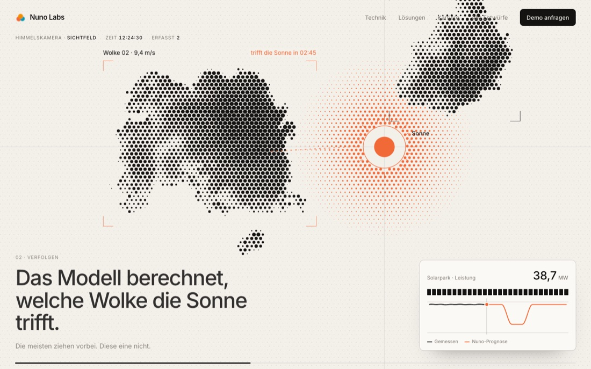
R6
Raster
Der Himmel als Punktmatrix. Beim Scrollen ziehen Wolken aus Rasterpunkten durch die orange Sonne und werden erkannt.
Direktvermarkter · Anlagenbetreiber · Netzbetreiber · Batteriespeicher · Karriere · Stellenanzeige
Alle Entwürfe für die neue Website. Oben die Shortlist, darunter die übrigen Varianten. Texte, Stellen und Zahlen sind Platzhalter.

Der Himmel als Punktmatrix. Beim Scrollen ziehen Wolken aus Rasterpunkten durch die orange Sonne und werden erkannt.
Direktvermarkter · Anlagenbetreiber · Netzbetreiber · Batteriespeicher · Karriere · Stellenanzeige
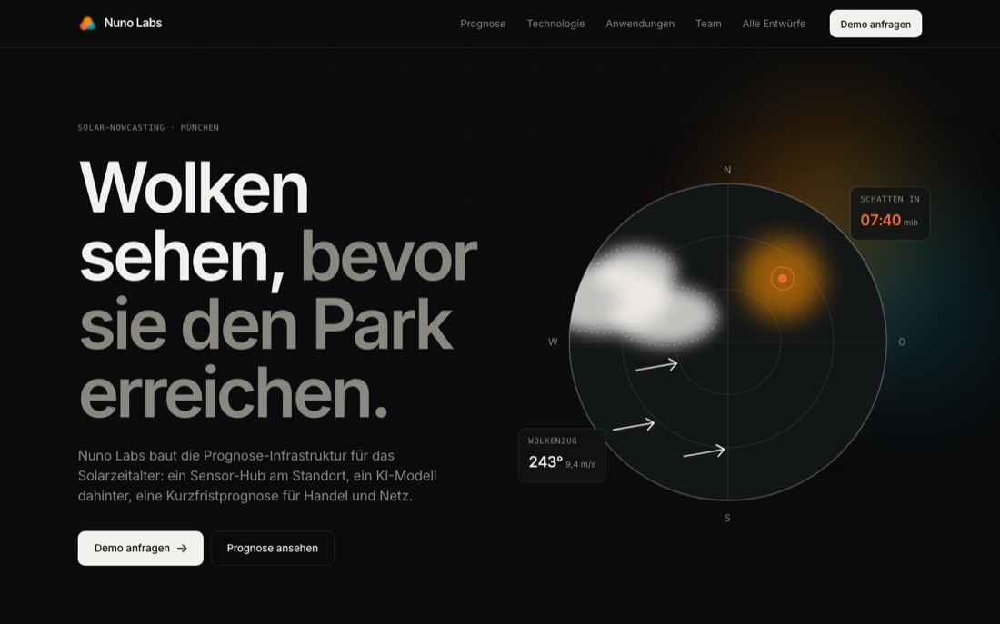
Dunkel und technisch. Die Himmelskamera ist das Hauptmotiv, Kennzahlen wie auf einem Messgerät.
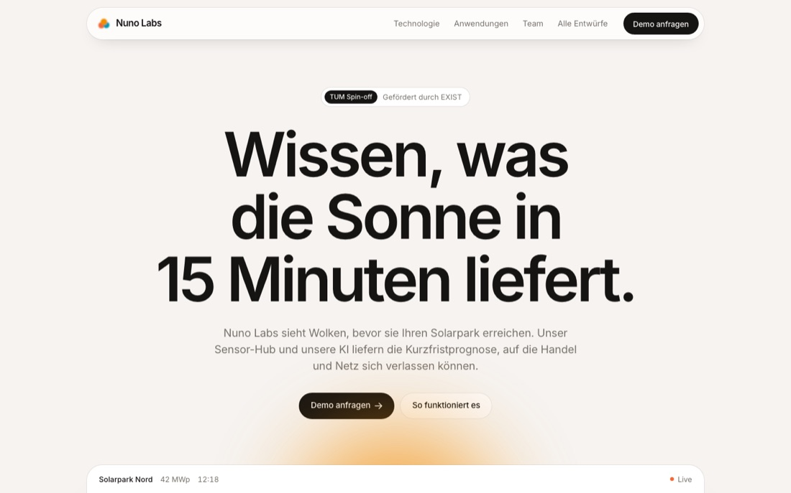
Warmes Off-White, zentrierte Headline, das Produkt als Live-Karte direkt im Einstieg.
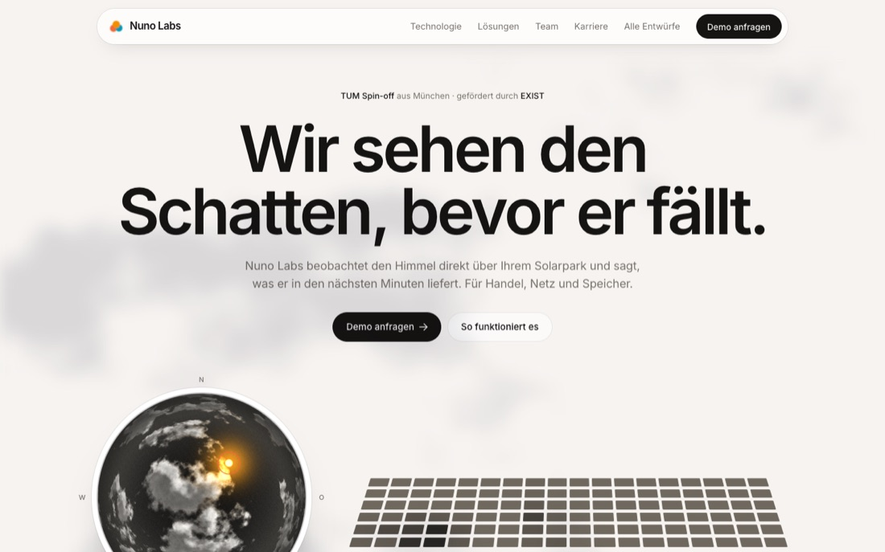
Variante A mit Himmelskamera, Wolkenschatten über der Seite und einer Kurve, die dasselbe Wolkenfeld zeigt.
Direktvermarkter · Anlagenbetreiber · Netzbetreiber · Batteriespeicher
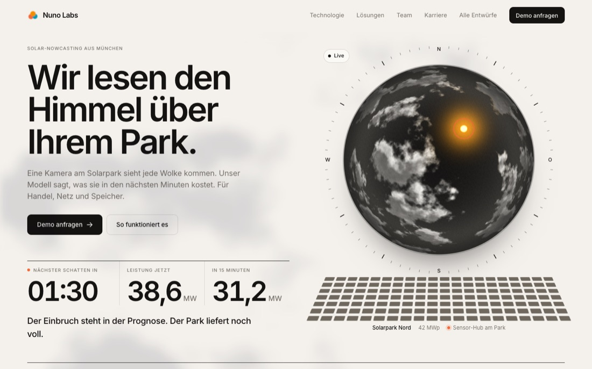
Die Seite als Messgerät: große Kamera mit Gradskala, Countdown bis zum nächsten Schatten, Blick in die Zukunft über die Kurve.
Direktvermarkter · Anlagenbetreiber · Netzbetreiber · Batteriespeicher
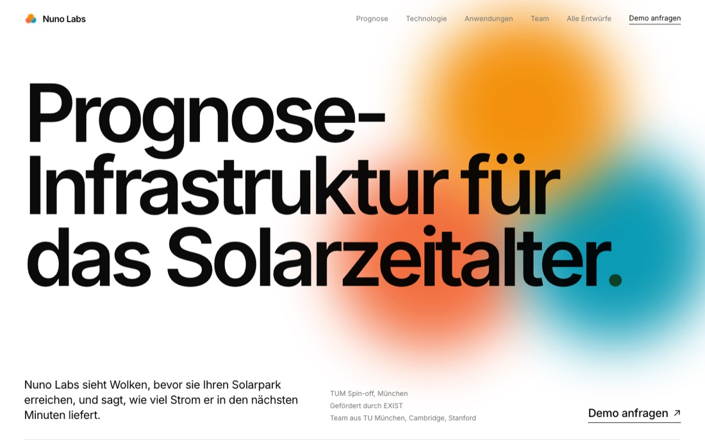
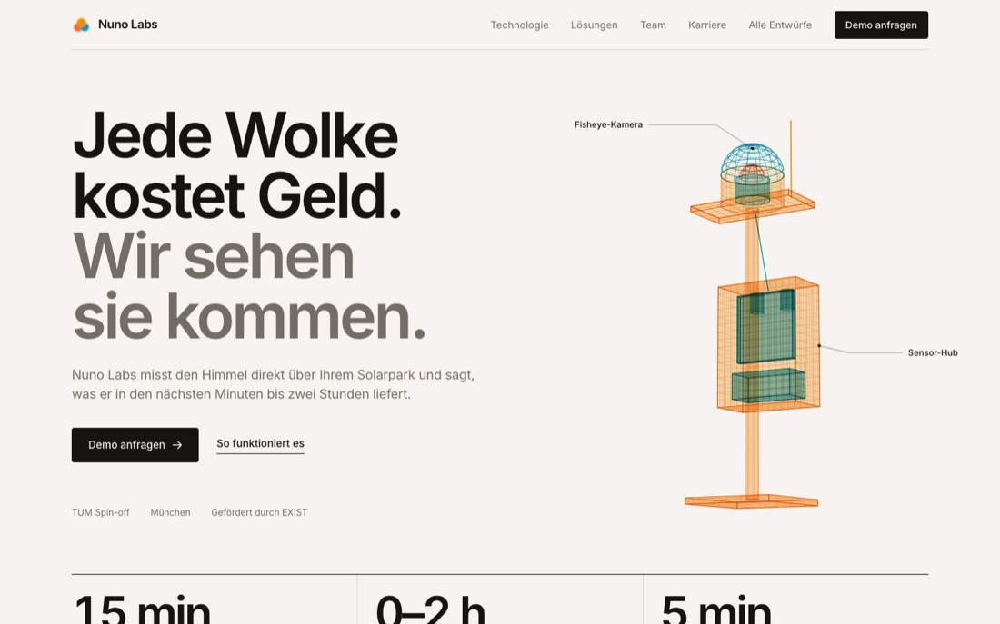
Haarlinien statt Karten, durchleuchtete 3D-Objekte.
Direktvermarkter · Anlagenbetreiber · Netzbetreiber · Batteriespeicher
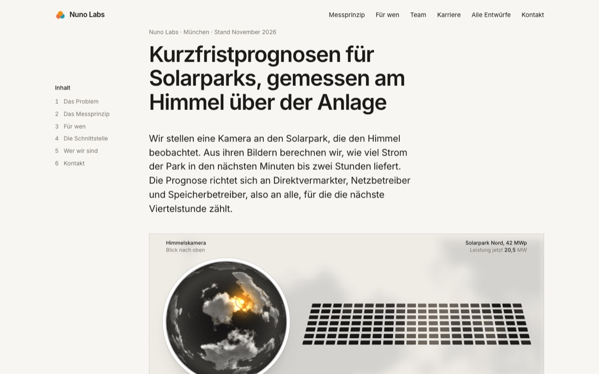
Die Website als Laborbericht mit Fließtext und Abbildungen.
Direktvermarkter · Anlagenbetreiber · Netzbetreiber · Batteriespeicher
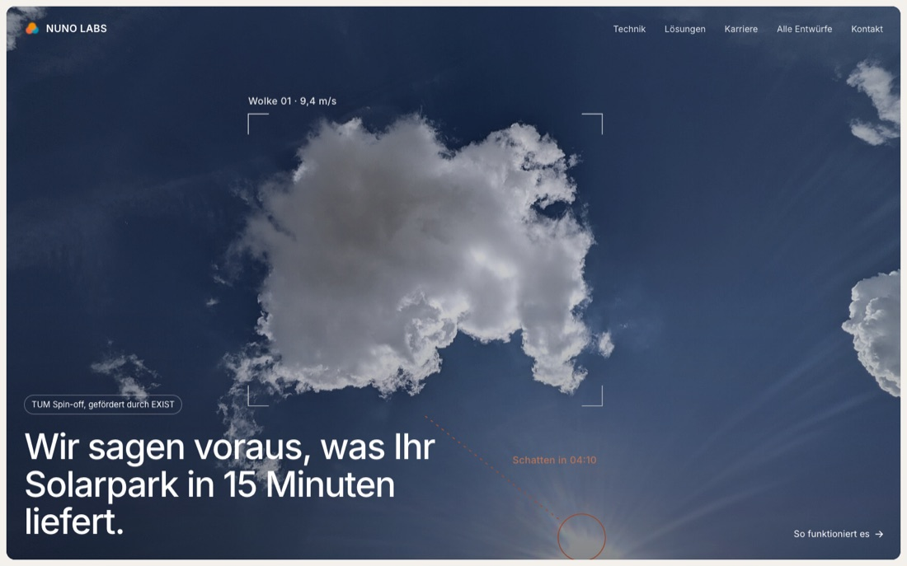
Ein Himmelsfoto füllt den Einstieg, die Erkennung der Wolke ist eingeblendet.
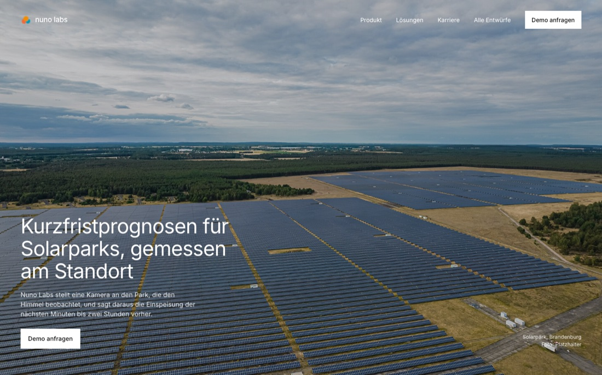
Der Solarpark als Vollbild, darunter Bildflächen statt Karten.
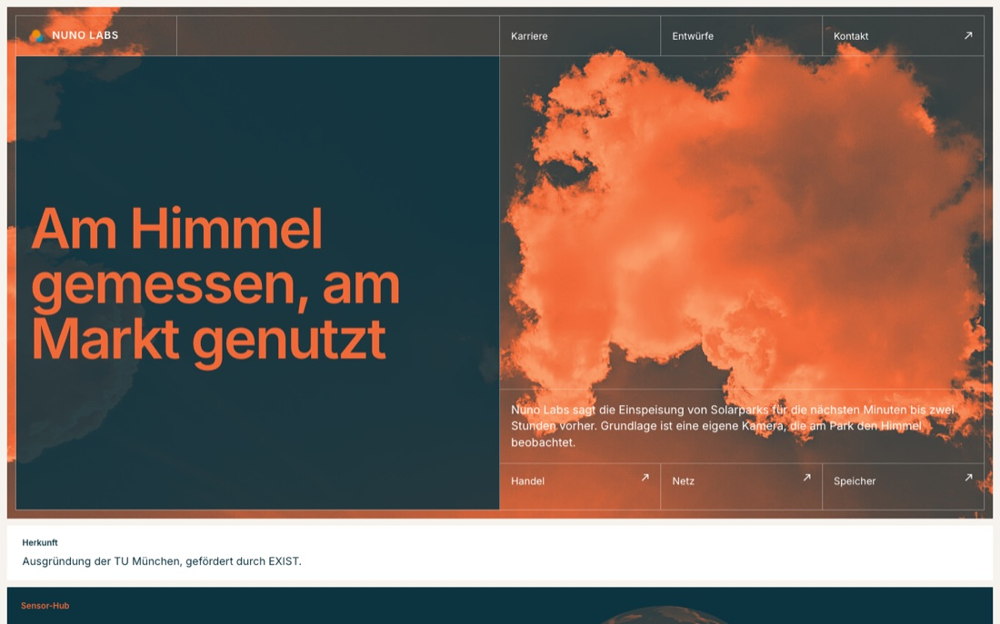
Alle Bilder in Petrol und Orange, Inhalte in einem sichtbaren Linienraster.
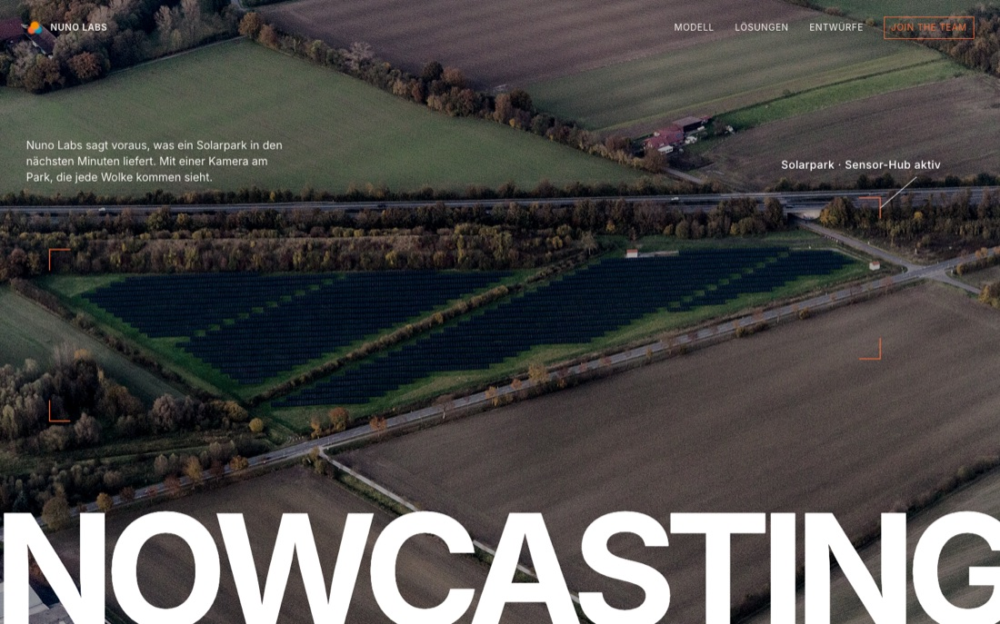
Dunkel, Luftbild mit markiertem Park, ein einziges riesiges Wort.
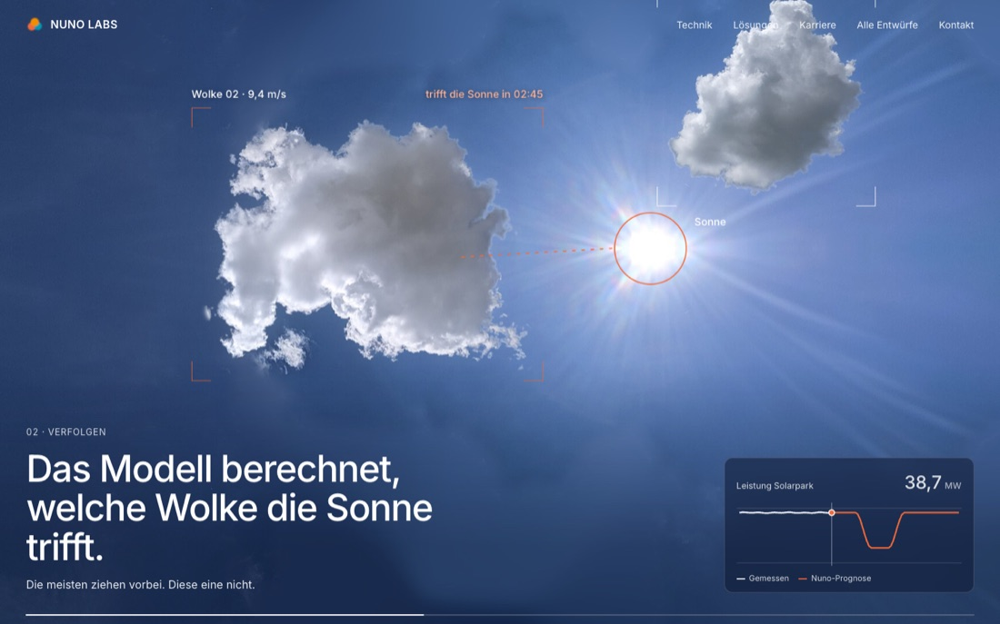
Die Scroll-Szene mit echten, freigestellten Wolken.